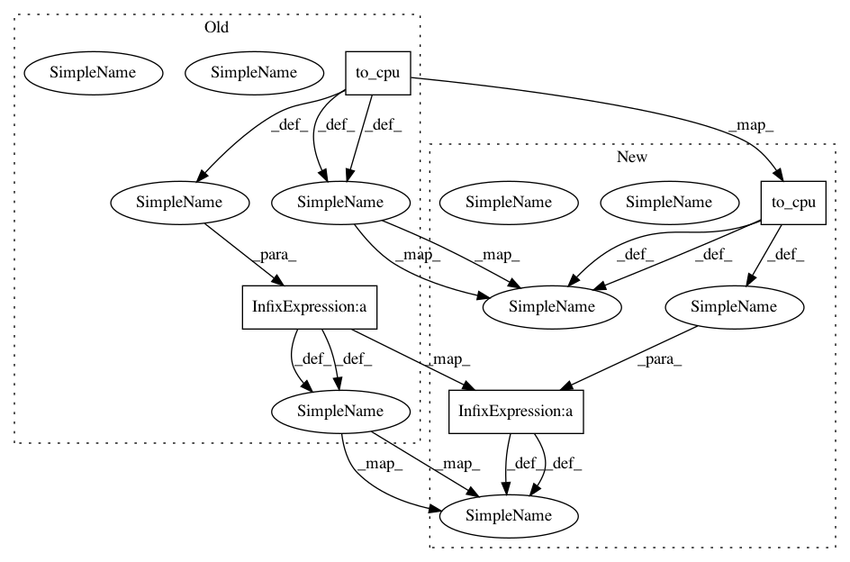

b11ccd8a00994c7c3fe61287f70b6bab6a53239f,tests/links_tests/model_tests/ssd_tests/test_multibox_loss.py,TestMultiNodeMultiboxLoss,_check_forward,#TestMultiNodeMultiboxLoss#,171
Before Change
mb_locs_local, mb_confs_local,
gt_mb_locs_local, gt_mb_labels_local, k, self.comm)
loc_loss_local = cuda.to_cpu(loc_loss_local.array)
conf_loss_local = cuda.to_cpu(conf_loss_local.array)
loc_loss = self.comm.allreduce(loc_loss_local) / self.comm.size
conf_loss = self.comm.allreduce(conf_loss_local) / self.comm.size
expect_loc_loss, expect_conf_loss = multibox_loss(
self.mb_locs, self.mb_confs, self.gt_mb_locs, self.gt_mb_labels, k)
After Change
mb_locs_local, mb_confs_local,
gt_mb_locs_local, gt_mb_labels_local, k, self.comm)
loc_loss_local = cuda.to_cpu(loc_loss_local.array).reshape((-1,))
conf_loss_local = cuda.to_cpu(conf_loss_local.array).reshape((-1,))
loc_loss = np.asscalar(
self.comm.allreduce(loc_loss_local) / self.comm.size)
conf_loss = np.asscalar(
self.comm.allreduce(conf_loss_local) / self.comm.size)
In pattern: SUPERPATTERN
Frequency: 4
Non-data size: 4
Instances
Project Name: chainer/chainercv
Commit Name: b11ccd8a00994c7c3fe61287f70b6bab6a53239f
Time: 2018-10-12
Author: Hakuyume@users.noreply.github.com
File Name: tests/links_tests/model_tests/ssd_tests/test_multibox_loss.py
Class Name: TestMultiNodeMultiboxLoss
Method Name: _check_forward
Project Name: chainer/chainercv
Commit Name: 3ce86ad7d4a71457489056f2955b3be75cb1366a
Time: 2018-10-12
Author: Hakuyume@users.noreply.github.com
File Name: tests/links_tests/model_tests/ssd_tests/test_multibox_loss.py
Class Name: TestMultiNodeMultiboxLoss
Method Name: _check_forward